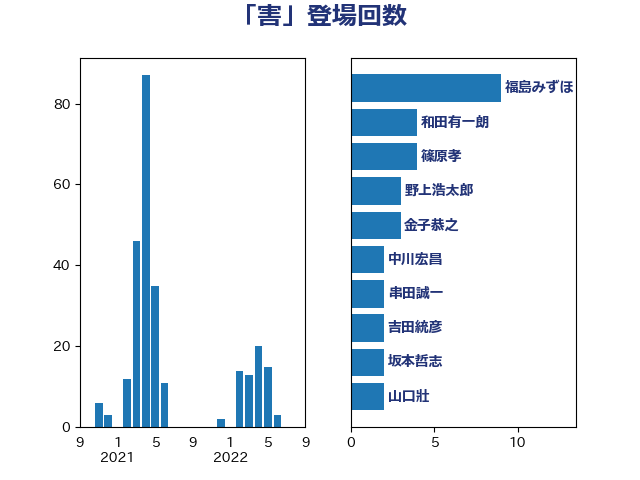

単語「害」

| 福島みずほ | 社会民主党 | 9 回 |
| 和田有一朗 | 日本維新の会 | 4 回 |
| 篠原孝 | 立憲民主党 | 4 回 |
| 野上浩太郎 | 自由民主党 | 3 回 |
| 金子恭之 | 自由民主党 | 3 回 |
| 中川宏昌 | 公明党 | 2 回 |
| 串田誠一 | 日本維新の会 | 2 回 |
| 吉田統彦 | 立憲民主党 | 2 回 |
| 坂本哲志 | 自由民主党 | 2 回 |
| 山口壯 | 自由民主党 | 2 回 |
| 市村浩一郎 | 日本維新の会 | 2 回 |
| 松沢成文 | 日本維新の会 | 2 回 |
| 田村まみ | 国民民主党 | 2 回 |
| 田村憲久 | 自由民主党 | 2 回 |
| 稲富修二 | 立憲民主党 | 2 回 |
| 萩生田光一 | 自由民主党 | 2 回 |
| 鈴木敦 | 国民民主党 | 2 回 |
| 鈴木英敬 | 自由民主党 | 2 回 |
| 阿部知子 | 立憲民主党 | 2 回 |
| 階猛 | 立憲民主党 | 2 回 |
| 青木愛 | 立憲民主党 | 2 回 |
| 三木亨 | 自由民主党 | 1 回 |
| 上月良祐 | 自由民主党 | 1 回 |
| 中村裕之 | 自由民主党 | 1 回 |
| 井上貴博 | 自由民主党 | 1 回 |
| 伊藤孝恵 | 国民民主党 | 1 回 |
| 佐藤英道 | 公明党 | 1 回 |
| 北神圭朗 | 無所属 | 1 回 |
| 嘉田由紀子 | 無所属 | 1 回 |
| 大岡敏孝 | 自由民主党 | 1 回 |
| 寺田学 | 立憲民主党 | 1 回 |
| 尾崎正直 | 自由民主党 | 1 回 |
| 山谷えり子 | 自由民主党 | 1 回 |
| 杉久武 | 公明党 | 1 回 |
| 梅村みずほ | 日本維新の会 | 1 回 |
| 横沢高徳 | 立憲民主党 | 1 回 |
| 武井俊輔 | 自由民主党 | 1 回 |
| 深澤陽一 | 自由民主党 | 1 回 |
| 田名部匡代 | 立憲民主党 | 1 回 |
| 田畑裕明 | 自由民主党 | 1 回 |
| 白石洋一 | 立憲民主党 | 1 回 |
| 神谷裕 | 立憲民主党 | 1 回 |
| 笹川博義 | 自由民主党 | 1 回 |
| 紙智子 | 日本共産党 | 1 回 |
| 緒方林太郎 | 無所属 | 1 回 |
| 舟山康江 | 国民民主党 | 1 回 |
| 茂木敏充 | 自由民主党 | 1 回 |
| 西岡秀子 | 国民民主党 | 1 回 |
| 赤羽一嘉 | 公明党 | 1 回 |
| 逢坂誠二 | 立憲民主党 | 1 回 |
| 鈴木貴子 | 自由民主党 | 1 回 |
| 高橋千鶴子 | 日本共産党 | 1 回 |